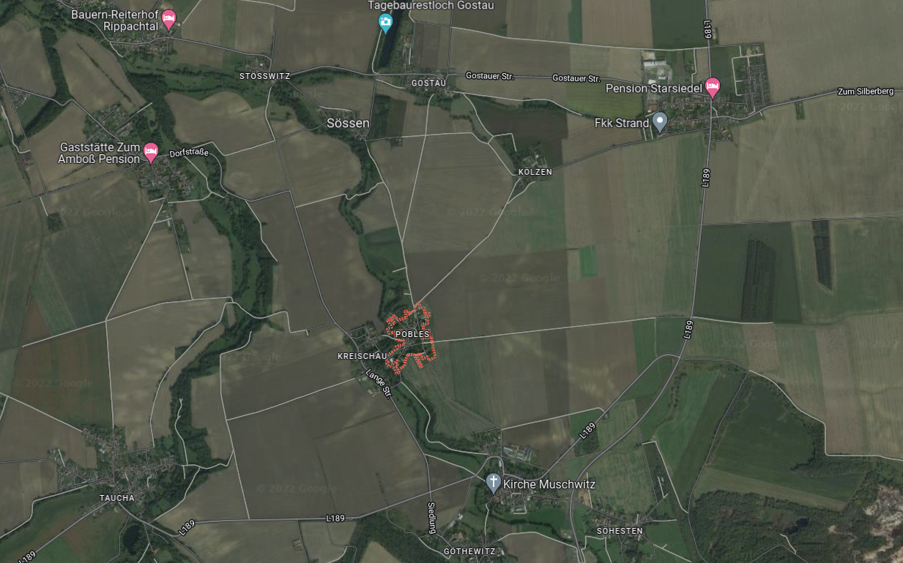
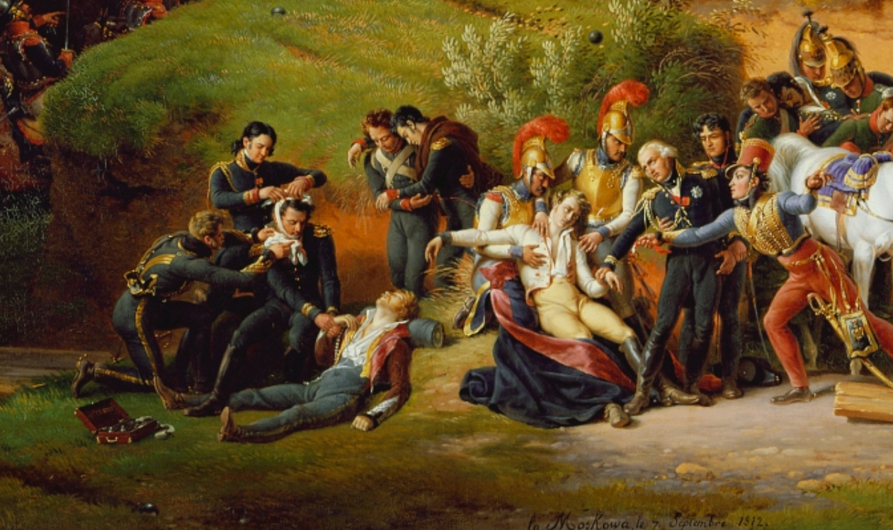
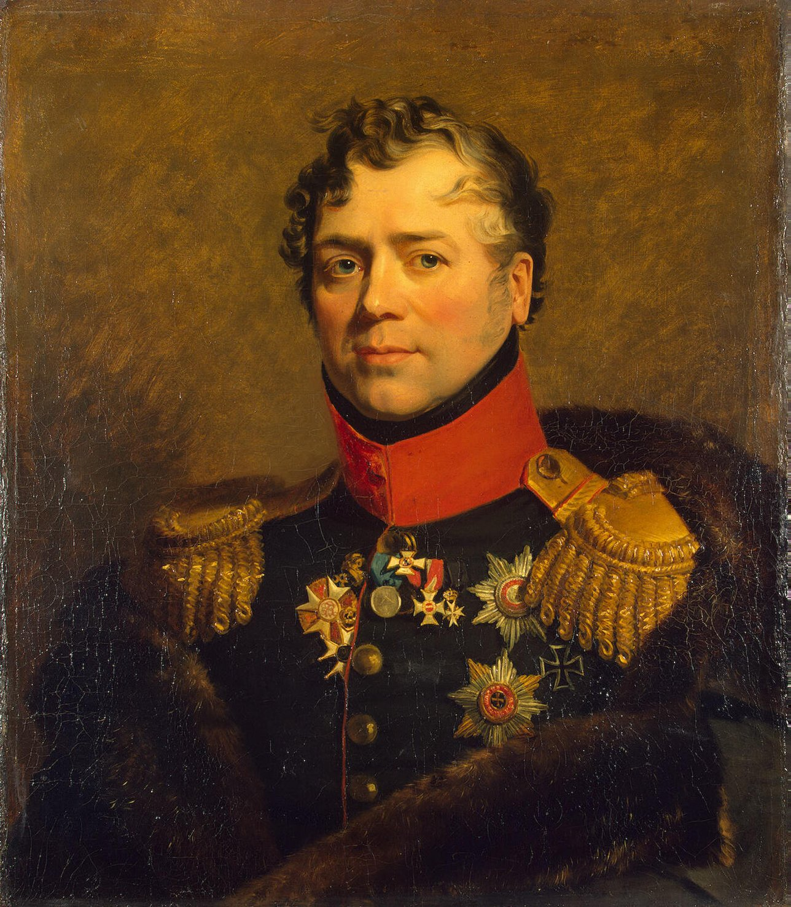
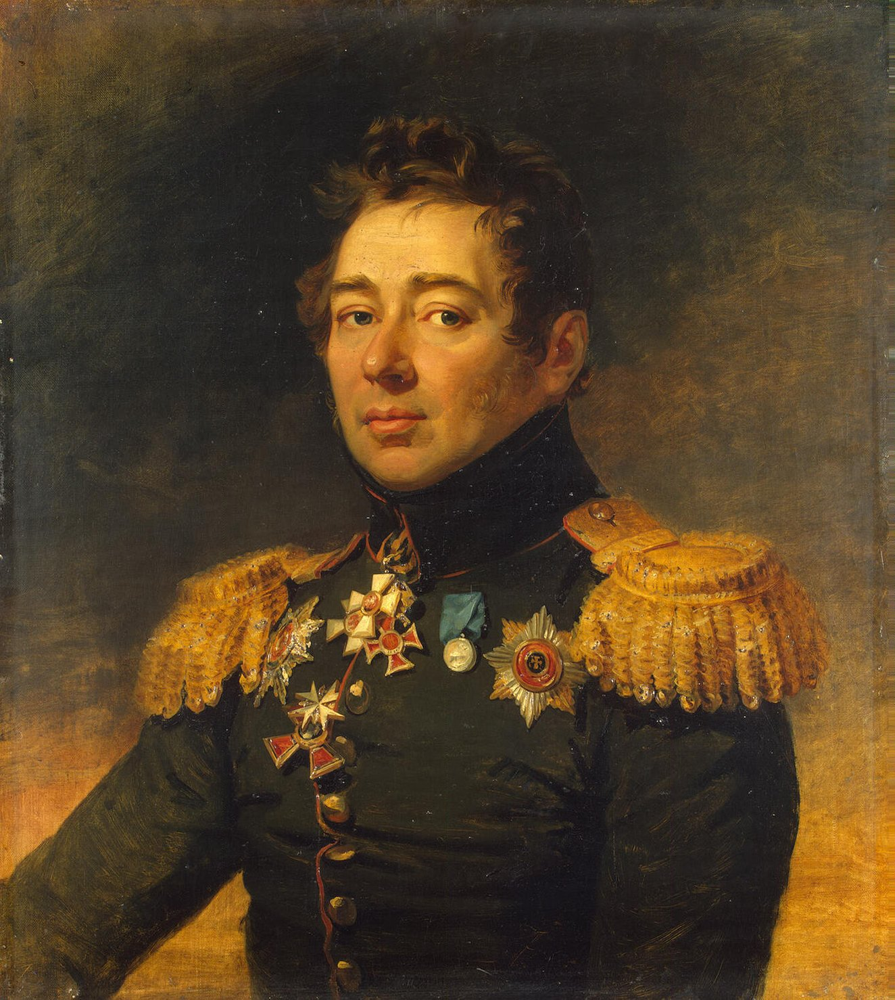

뤼첸 전투 (8) - 짜르가 지휘하는 포병대
게시: 2022-10-24T06:30:10+09:00
베르트랑이 이끄는 제4 군단 전력의 절반인 약 9천은 제12 사단 소속으로서, 바로 이들이 선봉에 서서 진격하고 있었습니다. 이들을 이끌고 있던 것은 모랑(Charles-Antoine Morand) 장군이었는데, 타우차에서 스타지들 마을 사이의 중간 정도 지점인 포블스(Pobles)까지 가자 그의 앞을 가로 막는 것이 있었습니다. 베르트랑이 서쪽 측면에서 접근한다는 소식을 듣고 비트겐슈타인이 4개 마을의 전투 현장 대신 부랴부랴 이쪽에 펼쳐놓은 빈칭게로더의 러시아 예비 기병군단 약 1만으로서, 거기에는 골리친(Dmitry Vladimirovich Golitsyn) 장군이 지휘하는 흉갑기병대와 수십문의 기마포병대까지 포함되어 있었습니다. 비록 다른 사단들이 3km 후방에 따라오고는 있었지만, 비교적 평탄한 지대를 걸어서 통과해야 하는 9천의 보병사단 앞에 이들은 그야말로 통곡의 벽처럼 보일 수 밖에 없었습니다.

(포블스는 베르트랑의 출발점인 타우차(지도 좌하단)와, 마르몽이 웅크리고 있던 스타지들 마을(지도 우상단)의 거의 중간에 있는 작은 마을입니다. 보시다시피 그뤼나바흐(Grünabach)라는 시냇물을 제외하면 그냥 탁 트인 평야지대입니다. 타우차와 스타지들 사이는 대략 5~6km 정도입니다.)

(모랑은 나폴레옹보다 2살 연하였고, 부르고뉴 지방의 변호사의 아들로 태어나 변호사 자격까지 획득한 인텔리였습니다. 그러나 프랑스 대혁명이 발발하고 국민공회가 모병을 호소하자 그에 응해 장교로 임관했습니다. 그는 원래 나폴레옹과는 연줄이 닿지 않았으나 이집트에서 드제 장군 밑에 편성되면서 나폴레옹과의 인연이 만들어졌고, 아우스테를리츠 전투 때는 술트 군단 소속으로 여단을 지휘하여 프라첸(Pratzen) 고지로 진격할 때 선봉에 섰습니다. 그러나 그의 진짜 전성기는 1806년 다부 원수 밑에 들어가면서부터였습니다. 이집트 때부터 친하게 지내던 다부 밑에서 그는 프리앙과 함께 다부의 원투 펀치로 활약하여 프로이센과 폴란드에서 큰 공을 세웠습니다. 그러나 영원한 우정은 없는 법인지, 모랑은 다부가 자신을 자기 밑에 붙들어 두려고 승진 기회를 주지 않는다고 생각하여 갈등을 빚었고, 급기야 1810년 공개적으로 다른 군단으로 전출을 요구하는 상황에 이르렀습니다. 그럼에도 다부 편이었던 나폴레옹은 전출을 허용하지 않았고, 모랑은 러시아 원정 내내 다부 밑에서 복무하면서도 다부와 두번 다시 화해하지 않았습니다. 이 그림은 르죈(Lejeune)이 그린 보로디노 전투인데, 이 전투에서 그는 폭발탄 파편에 턱을 크게 다치는 부상을 입었고 친동생 레오폴드를 잃었습니다. 전체 그림 하단 중앙부에 그와 그의 동생이 표현되어 있습니다. 나폴레옹 퇴위 이후 그는 부르봉 왕가로부터 우대를 받았음에도 백일천하 때 나폴레옹 편에 서서 워털루 전투에서도 플랑스누와(Plancenoit) 농가에서의 싸움을 지휘했습니다. 그 덕분에 국외 추방되었고 궐석재판을 통해 사형까지 언도되었습니다. 추방되어 오스트리아 빈을 통과할 때 그는 프란츠 황제의 환대를 받았고 짜르 알렉산드르로부터는 러시아군에 자리를 제공받았으나 모두 거절하고 오스트리아령 폴란드에서 조용히 지냈습니다. 결국 프랑스 7월 혁명 이후 복권되어 귀족 작위도 되찾았습니다.) 그러나 모랑은 다부와 함께 아우어슈테트 전투에서 1대3의 수적 열세에도 불구하고 역사에 길이 남는 승리를 낚아낸 용자였습니다. 그는 전체 사단을 바둑판처럼 여러 개의 보병방진으로 구성한 뒤 그뤼나바흐(Grünabach) 시냇물을 건너 과감히 진격했습니다. 다만 아우어슈테트 때와는 달리, 지금은 그의 부대 대부분이 몇 달 전 징집된 신병으로 구성된 상황이었습니다. 고참병들에게도 보병방진을 유지한 채 전진하는 것은 쉬운 과업이 아니었습니다. 과연 이들이 번쩍이는 갑옷과 투구를 뒤집어쓴 무시무시한 흉갑기병들의 돌격을 막아내며 행군할 수 있었을까요? 결론부터 말하자면 잘 버텼습니다. 반복되는 러시아 기병대의 돌격을 모랑의 보병방진은 마치 급류 속의 바위가 물결을 가르듯 튕겨내며 꾸준히 전진했습니다. 그러나 이건 모랑의 병사들이 용감해서라기 보다는 희한하게도 러시아 기병대가 대규모로 쳐들어오지 않고 조금씩 축차 투입되었기 때문이었습니다. 이는 빈칭게로더의 지휘가 이상할 정도로 소극적이었기 때문이었는데, 나중에 빈칭게로더는 '그 곳 지형이 거칠어 기병대의 대규모 돌격에 적절치 않았다'라고 주장했지만 비트겐슈타인은 그 다음날 빈칭게로더의 지휘권을 박탈할 정도로 그의 형편없는 지휘에 분노했다고 합니다.

(골리친 대공입니다. 나폴레옹보다 2살 어린 그는 유서깊은 러시아의 명문가 출신으로서, 그의 어머니는 푸쉬킨의 소설에도 등장할 정도로 유명한 귀부인이었습니다. 그는 어린 나이부터 군에서 복무했고 불과 27세의 나이에 소장의 위치에 올랐습니다. 특이한 이력으로는 15살 때 파리에 유학을 가서 프랑스 사관학교를 다녔는데, 파리에 있는 동안 프랑스 대혁명이 발발했고, 어찌어찌 하다보니 그도 바스티유 요새 습격에 가담하게 되었다는 것입니다. 물론 그가 프랑스 대혁명의 정신에 공감해서 가담한 것은 아니었으며, 그는 귀국한 뒤에 러시아군 소속으로 폴란드 반란을 진압하는 등 전형적인 러시아 귀족의 삶을 살았습니다. 그는 종전 이후 모스크바 지사를 지내며 불타버린 모스크바의 재건에 많은 노력을 기울였습니다. 그는 부귀영화를 누리다 73세의 나이로 파리에서 죽었는데, 러시아 귀족답게 프랑스어를 모국어처럼 썼고 평생 러시아 말은 잘 못했다고 합니다.) 이렇게 다가오는 베르트랑의 군단은 모나쉔휘겔 언덕에서 내려다보던 짜르에게까지 보였습니다. 사실 알렉산드르는 이런 위기 상황을 기다리고 있었습니다. 그는 대뜸 언덕 아래로 말을 달려 내려가 인근에서 40문의 포대를 이끌고 대기 중이던 니키친(Alexey Petrovich Nikitin) 장군에게 이렇게 말하며 당장 저 프랑스군을 막아 세우라고 명령했습니다. "귀관의 포격 효과를 내 눈으로 직접 지켜 보겠네." 그 정도에 그칠 알렉산드르가 아니었습니다. 니키친에게 부담스럽게도 그는 포병대와 함께 전진하여 프랑스군 코 앞까지 다가갔고, 당시 기록에 따르면 정말 프랑스군의 머스켓 사거리 안쪽까지 들어갔다고 합니다. 짜르가 바로 옆에서 지켜보면 과연 대포알이 더 정확하게 날아가는지는 모르겠습니다만, 알렉산드르의 그런 일선 지휘관 행세는 사람들이 흔히 생각하는 그런 부작용을 냈습니다. 지휘 체계가 헝클어진 것입니다.

(니키친 백작입니다. 나폴레옹보다 8세 연하였던 그는 가난한 귀족 출신이었고, 그래서 당시 공부는 잘 하지만 '빽'이 없는 젊은 귀족 장교들이 흔히 그러듯이 포병 장교가 되었습니다. 아무래도 포병이나 공병 장교는 수학에도 능통해야 했기 때문에, 진짜 권세 있는 귀족 출신들은 보통 기병이나 보병 연대에 자리를 구했기 때문이었지요. 그렇게 '빽'이 없는 사람들로 구성되었던 포병 장교는 보통 승진이 느렸는데, 그럼에도 그는 30세의 젊은 나이에 대령으로 승진하는 등 꽤 두각을 드러냈고, 보로디노 전투에서 대령 계급으로 참전하여 2차례나 부상을 입으면서도 용감히 싸워 훈장을 받기도 했습니다. 그는 명예로운 공직을 역임하며 81세까지 장수했습니다.) 가령 참모들이 뭔가 보고를 하고 지시를 받으려 비트겐슈타인의 사령부로 달려가보니, 총사령관이 제 위치에 없었습니다. 어떻게 생각하면 당연한 일인데, 짜르가 포병대와 함께 서쪽 최전선으로 갔다는 소식이 들어왔는데 총사령관이 가만히 있을 수가 없었던 것입니다. 비트겐슈타인은 니키친의 포병대로 눈썹이 바람에 휘날리게 말을 달려, 알렉산드르에게 제발 모나쉔휘겔로 돌아가주십사 사정사정 해야 했습니다. 물론 알렉산드르는 못 들은 척 했고, 덕분에 총사령관에게 뭔가 보고를 하려던 참모들과 전령들도 포탄이 빗발치는 좌익 최전선으로 오가야 했습니다. 실제로 알렉산드르의 위치는 위험한 장소였고, 짜르의 마필 관리인과 행정병 하나가 이 때 피격되어 쓰러졌습니다. 알렉산드르가 직접 감독한 덕분인지, 니키친의 포병들은 눈에 띄는 전과를 올렸습니다. 빈칭게로더의 기병들이 막아내지 못한 모랑 사단의 전진을 이 포격을 통해 일부 흐트러뜨린 것입니다. 실제로야 어쨌건, 알렉산드르로서는 '프랑스군의 측면 공격을 자신이 직접 포병들을 지휘하여 막아세웠다'라고 자랑할 수 있었습니다. 결국 베르트랑 군단의 진격은 스트라스지들에서 1~2km 밖에 떨어지지 않은 쾰젠(Kölzen)에서 일단 멈춰섰으나, 러시아군도 대대적인 역습에 나서지는 못했습니다. 그렇게 반격할 목적으로 프로이센군의 항의에도 불구하고 베르크의 러시아 군단을 이쪽 방면에 대기시켜 놓았지만, 비트겐슈타인은 끝끝내 베르크 군단을 동원하지 않았습니다. 그것도 이유가 있었습니다. 바로 스타지들 마을에 버티고 있던 마르몽의 작은 군단 때문이었습니다. 베르크의 군단도 1만 정도로서 마르몽의 군단 못지 않게 작은 규모였는데, 베르트랑과 마르몽 사이에 어정쩡하게 자리를 잡고 양측 모두와 대치하는 모양새였습니다. 만약 베르트랑과 마르몽이 동시에 베르크 군단을 들이쳤다면 아무리 빈칭게로더의 예비 기병군단이 있다고 하더라도 베르크의 군단은 버티기가 어려웠을 것입니다. 그러나 마르몽은 원래 그다지 용맹과감한 지휘관은 아니었고, 여기서도 그는 그의 명성이 부끄러울 정도로 소심하게 행동하여 스타지들 마을에서 움츠리고 움직이지 않았습니다. 실은 모랑 사단의 접근을 보고 4개 마을 현장으로 이동을 시작했으나. 곧 정지했습니다. 바로 남쪽에 배치되어 마르몽을 견제하던 빌헬름 왕자의 대규모 포병대와 기병대, 그리고 저 너머 보이는 베르크 군단 핑계를 대긴 했지만, 모랑 사단이 스트라스지들 바로 코 앞인 쾰젠까지 온 상황에서도 마르몽이 조금 진격하다 만 것은 지나치게 소극적인 행동이었습니다. 결과적으로 마르몽과 베르트랑의 2개 군단 총 3만은 그보다 다소 적은 약 2만3천의 빈칭게로더와 베르크, 빌헬름의 병력에 의해 발목을 붙잡힌 셈이 되었습니다. 나폴레옹이 회심의 일격이랍시고 준비했던 두 개의 측면 공격 중 서쪽에서의 공격은 이렇게 일단 멈춤에 들어갔습니다. 그러나 동쪽에서의 공격은 달랐습니다. Source : The Life of Napoleon Bonaparte, by William Milligan Sloane Napoleon and the Struggle for Germany, by Leggiere, Michael V https://en.wikipedia.org/wiki/Charles_Antoine_Morand https://en.wikipedia.org/wiki/Dmitry_Golitsyn https://youwikiiw.com/wiki/%D0%9D%D0%B8%D0%BA%D0%B8%D1%82%D0%B8%D0%BD,_%D0%90%D0%BB%D0%B5%D0%BA%D1%81%D0%B5%D0%B9_%D0%9F%D0%B5%D1%82%D1%80%D0%BE%D0%B2%D0%B8%D1%87